Notes
Your notes
Write, draw with a pen, add images and calculations. Notes are saved only in this browser, on this device. Nobody else can see them.
No notes yet. Press “New note” to start.
Add

ElyvrisNotes
Write, draw with a pen, add images and calculations. Notes are saved only in this browser, on this device. Nobody else can see them.
No notes yet. Press “New note” to start.